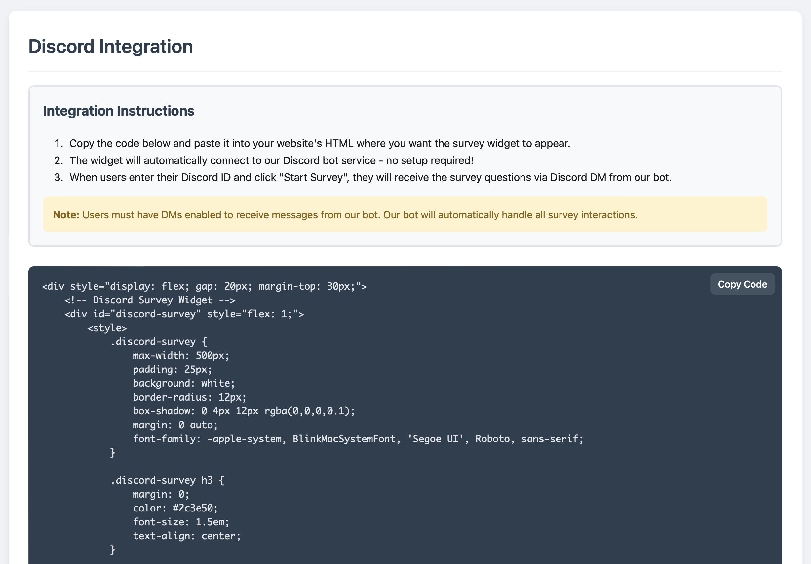
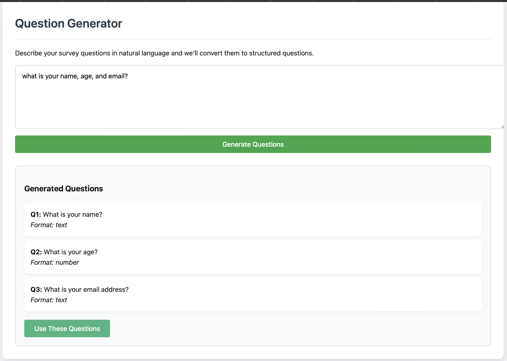
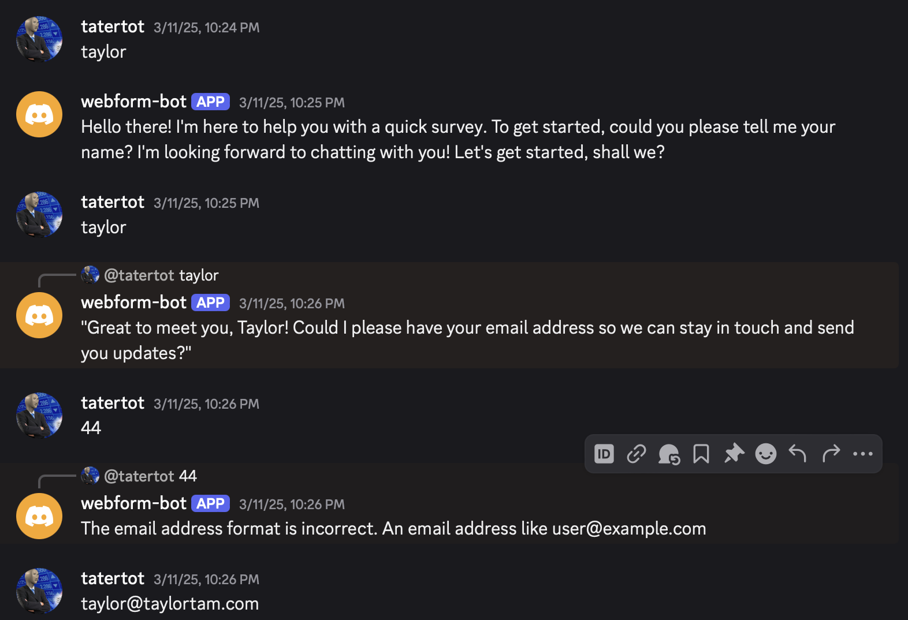

A lightweight JS widget that transforms static forms into dynamic, AI-driven conversations—handled entirely through a Discord bot powered by Mistral. Designed for smoother user onboarding, surveys, and interactive workflows.
Project Overview
Ever had to help a family through frustrating form validation? We developed a tool that turns any standard survey into a conversation with an AI agent, who helps guide a user through validation and standardizes user input. Can integrate into any website through a dev portal that generates an embeddable JS widget.
Key Features
- AI Agent: Developed an AI Agent via discord using Mistral API. Through Mistral, every survey question is turned into a conversational, natural language question. If there is input error, a user is gently guided through fixing their response to fit the desired input.
- Developer Portal: Any developer can create a list of questions in natural language, or within a structured format. This generates a JS widget on the developer portal, which can be pasted into any website source code and transform a webform into an interactive conversation with our Discord agent.
- JS Widget: The pasted JS widget prompts a user to input their discord id. From their, a DM is sent to the user with the survey questions. A developer simply needs to set up a webhook to get json responses, already in the format necessary.
Technical Details
The system consists of three major components: a JavaScript widget generator, an AI-powered Discord bot, and a webhook-based response collector.
1. JS Widget Generator
Developers define survey questions through a simple web interface—either in natural language or in a structured format. These inputs are used to generate a JS widget that can be pasted into any website source code.
When embedded on a developer's site, the widget prompts users to enter their Discord username. Upon submission, a backend call is made to our API to initialize the Discord conversation.
2. AI Discord Agent
Built using Discord.js and integrated with Mistral API, the AI agent converts each form question into a conversational prompt. It interprets free-text user responses, validates against expected formats, and provides real-time correction when necessary.
The bot maintains context across a conversation and provides a smooth, human-like experience using prompt engineering and function-calling for structured data extraction.
3. Response Delivery via Webhooks
Once a user completes the conversation, the structured results are posted as JSON to a developer-defined webhook. Each response payload includes metadata like the user's Discord ID, timestamp, and the validated answers.
This makes it simple for devs to plug the results into any database, spreadsheet, or automation pipeline.
Technologies Used
- Discord.js – Handles bot interactions and messaging flows.
- Mistral API – Used for conversational prompt generation and data validation.
- Node.js / Express – Backend services for webhook handling and widget generation.
- Vanilla JS – For embedding widgets without dependencies or heavy SDKs.